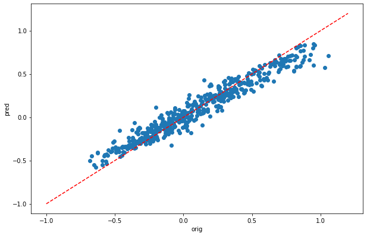

Estimating nitrogen and phosphorus concentrations in streams and rivers
Longzhu Shen
Spatial Ecology
May 2021
Exercise base on the:
Longzhu Q. Shen, Giuseppe Amatulli, Tushar Sethi, Peter Raymond & Sami Domisch
Scientific Data volume 7, Article number: 161 (2020) Cite this article
BackGround
Geoenviornmental variables
Ground observationd : Nitrogen in US streams
Lectures: Machine Learning Optimization
Code
[2]:
import pandas as pd
import numpy as np
from sklearn.ensemble import RandomForestRegressor as RFReg
from sklearn.model_selection import train_test_split,GridSearchCV
from sklearn.pipeline import Pipeline
from scipy.stats.stats import pearsonr
import matplotlib.pyplot as plt
plt.rcParams["figure.figsize"] = (10,6.5)
read in data
[3]:
dsIn = pd.read_csv("./txt/TN_Data_Sample.csv")
dsIn.head(6)
[3]:
| sLong | sLat | mean | lu_avg_01 | lu_avg_02 | lu_avg_03 | lu_avg_04 | lu_avg_05 | lu_avg_06 | lu_avg_07 | ... | hydro_avg_13 | hydro_avg_14 | hydro_avg_15 | hydro_avg_16 | hydro_avg_17 | hydro_avg_18 | hydro_avg_19 | dem_avg | slope_ave | lentic_lotic01 | |
|---|---|---|---|---|---|---|---|---|---|---|---|---|---|---|---|---|---|---|---|---|---|
| 0 | -123.187500 | 46.179165 | 0.566667 | 28 | 0 | 15 | 45 | 23 | 22 | 12 | ... | 107329616 | 38819396 | 29 | 310689856 | 136347292 | 310689856 | 136347292 | 1470 | 492 | 8 |
| 1 | -123.129166 | 45.437500 | 1.166667 | 24 | 0 | 6 | 25 | 0 | 4 | 41 | ... | 23143 | 1529 | 68 | 64073 | 7800 | 64073 | 7800 | 142 | 291 | 2 |
| 2 | -123.120834 | 45.470833 | 0.628778 | 46 | 0 | 3 | 33 | 0 | 1 | 15 | ... | 167329 | 11217 | 68 | 470310 | 55128 | 470310 | 55128 | 315 | 353 | 3 |
| 3 | -123.120834 | 45.504166 | 0.336667 | 55 | 0 | 2 | 32 | 0 | 1 | 9 | ... | 117497 | 8462 | 67 | 333116 | 40989 | 333116 | 40989 | 315 | 441 | 2 |
| 4 | -123.054169 | 45.504166 | 0.595833 | 46 | 0 | 3 | 31 | 0 | 2 | 17 | ... | 307267 | 21228 | 68 | 865826 | 104122 | 865826 | 104122 | 290 | 363 | 3 |
| 5 | -123.012497 | 45.520832 | 1.573333 | 30 | 0 | 4 | 32 | 0 | 3 | 29 | ... | 233499 | 18441 | 65 | 662045 | 92675 | 662045 | 92675 | 208 | 248 | 3 |
6 rows × 50 columns
[3]:
dsIn.columns.values
[3]:
array(['sLong', 'sLat', 'mean', 'lu_avg_01', 'lu_avg_02', 'lu_avg_03',
'lu_avg_04', 'lu_avg_05', 'lu_avg_06', 'lu_avg_07', 'lu_avg_08',
'lu_avg_09', 'lu_avg_10', 'lu_avg_11', 'lu_avg_12', 'prec', 'tmin',
'tmax', 'soil_avg_01', 'soil_avg_02', 'soil_avg_03', 'soil_avg_04',
'soil_avg_05', 'soil_avg_06', 'soil_avg_07', 'soil_avg_08',
'soil_avg_09', 'soil_avg_10', 'hydro_avg_01', 'hydro_avg_02',
'hydro_avg_03', 'hydro_avg_04', 'hydro_avg_05', 'hydro_avg_06',
'hydro_avg_07', 'hydro_avg_08', 'hydro_avg_09', 'hydro_avg_10',
'hydro_avg_11', 'hydro_avg_12', 'hydro_avg_13', 'hydro_avg_14',
'hydro_avg_15', 'hydro_avg_16', 'hydro_avg_17', 'hydro_avg_18',
'hydro_avg_19', 'dem_avg', 'slope_ave', 'lentic_lotic01'],
dtype=object)
[4]:
feats = ['mean','tmax']
[14]:
bins = np.linspace(min(dsIn['mean']),max(dsIn['mean']),100)
plt.hist((dsIn['mean']),bins,alpha=0.8);

[3]:
dsIn['log']= np.log10(dsIn['mean'])
[16]:
bins = np.linspace(min(dsIn['log']),max(dsIn['log']),100)
plt.hist((dsIn['log']),bins,alpha=0.8);

[4]:
X = dsIn.iloc[:,3:50].values
Y = dsIn.iloc[:,50:51].values
feat = dsIn.iloc[:,3:50].columns.values
[4]:
feat
[4]:
array(['lu_avg_01', 'lu_avg_02', 'lu_avg_03', 'lu_avg_04', 'lu_avg_05',
'lu_avg_06', 'lu_avg_07', 'lu_avg_08', 'lu_avg_09', 'lu_avg_10',
'lu_avg_11', 'lu_avg_12', 'prec', 'tmin', 'tmax', 'soil_avg_01',
'soil_avg_02', 'soil_avg_03', 'soil_avg_04', 'soil_avg_05',
'soil_avg_06', 'soil_avg_07', 'soil_avg_08', 'soil_avg_09',
'soil_avg_10', 'hydro_avg_01', 'hydro_avg_02', 'hydro_avg_03',
'hydro_avg_04', 'hydro_avg_05', 'hydro_avg_06', 'hydro_avg_07',
'hydro_avg_08', 'hydro_avg_09', 'hydro_avg_10', 'hydro_avg_11',
'hydro_avg_12', 'hydro_avg_13', 'hydro_avg_14', 'hydro_avg_15',
'hydro_avg_16', 'hydro_avg_17', 'hydro_avg_18', 'hydro_avg_19',
'dem_avg', 'slope_ave', 'lentic_lotic01'], dtype=object)
[7]:
X.shape
[7]:
(1010, 47)
[8]:
Y.shape
[8]:
(1010, 1)
[9]:
X_train, X_test, Y_train, Y_test = train_test_split(X, Y, test_size=0.5, random_state=24)
y_train = np.ravel(Y_train)
y_test = np.ravel(Y_test)
[21]:
pipeline = Pipeline([('rf',RFReg())])
parameters = {
'rf__max_features':("log2","sqrt",0.33),
'rf__max_samples':(0.5,0.6,0.7),
'rf__n_estimators':(500,1000,2000),
'rf__max_depth':(50,100,200)}
grid_search = GridSearchCV(pipeline,parameters,n_jobs=-1,cv=3,scoring='r2',verbose=1)
grid_search.fit(X_train,y_train)
Fitting 3 folds for each of 81 candidates, totalling 243 fits
[21]:
GridSearchCV(cv=3, estimator=Pipeline(steps=[('rf', RandomForestRegressor())]),
n_jobs=-1,
param_grid={'rf__max_depth': (50, 100, 200),
'rf__max_features': ('log2', 'sqrt', 0.33),
'rf__max_samples': (0.5, 0.6, 0.7),
'rf__n_estimators': (500, 1000, 2000)},
scoring='r2', verbose=1)
[22]:
grid_search.best_score_
[22]:
0.6719812711835207
[23]:
print ('Best Training score: %0.3f' % grid_search.best_score_)
print ('Optimal parameters:')
best_par = grid_search.best_estimator_.get_params()
for par_name in sorted(parameters.keys()):
print ('\t%s: %r' % (par_name, best_par[par_name]))
Best Training score: 0.672
Optimal parameters:
rf__max_depth: 200
rf__max_features: 0.33
rf__max_samples: 0.7
rf__n_estimators: 500
[10]:
rfReg = RFReg(n_estimators=500,max_features=0.33,max_depth=200,max_samples=0.7,n_jobs=-1,random_state=24)
rfReg.fit(X_train, y_train);
dic_pred = {}
dic_pred['train'] = rfReg.predict(X_train)
dic_pred['test'] = rfReg.predict(X_test)
[pearsonr(dic_pred['train'],y_train)[0],pearsonr(dic_pred['test'],y_test)[0]]
[10]:
[0.9697515742517621, 0.8061496236451665]
[28]:
plt.scatter(y_train,dic_pred['train'])
plt.xlabel('orig')
plt.ylabel('pred')
ident = [-1, 1.2]
plt.plot(ident,ident,'r--')
[28]:
[<matplotlib.lines.Line2D at 0x153076b2fdf0>]

[29]:
plt.scatter(y_test,dic_pred['test'])
plt.xlabel('orig')
plt.ylabel('pred')
ident = [-1, 1.2]
plt.plot(ident,ident,'r--')
[29]:
[<matplotlib.lines.Line2D at 0x153075404250>]

[11]:
impt = [rfReg.feature_importances_, np.std([tree.feature_importances_ for tree in rfReg.estimators_],axis=1)]
ind = np.argsort(impt[0])
[12]:
ind
[12]:
array([ 9, 7, 10, 1, 23, 4, 46, 12, 37, 40, 36, 42, 41, 38, 43, 20, 24,
27, 33, 35, 39, 8, 29, 44, 30, 22, 31, 26, 32, 0, 28, 2, 45, 18,
13, 14, 11, 25, 34, 5, 3, 6, 17, 21, 19, 15, 16])
[15]:
plt.rcParams["figure.figsize"] = (6,12)
plt.barh(range(len(feat)),impt[0][ind],color="b", xerr=impt[1][ind], align="center")
plt.yticks(range(len(feat)),feat[ind]);